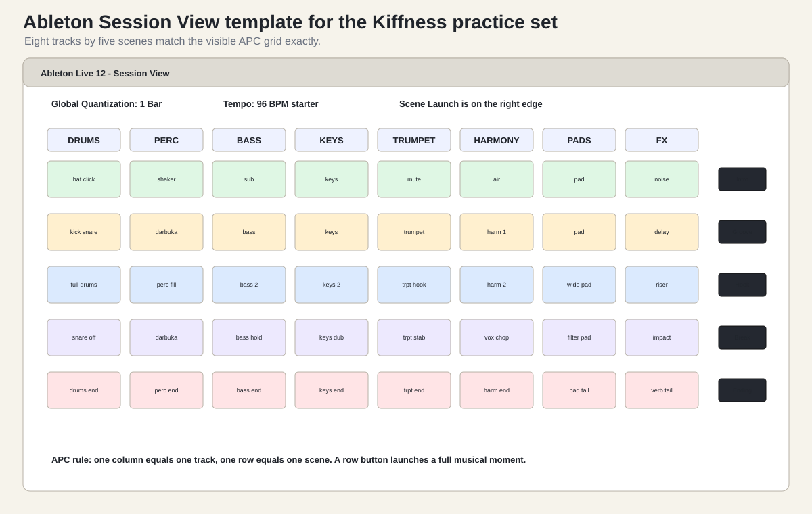

Watch first. Isotonik Studios, “Preparing your set for the APC40 / Launchpad”, the whole 9:40: https://www.youtube.com/watch?v=76WvQNJB1bk. This is the one video worth watching end to end before building a set.
Create exactly eight tracks and five scenes. Keep the whole first performance inside one APC grid.
Name the tracks:
DRUMSPERCBASSKEYSTRUMPETHARMONYPADSFXColor the tracks by family:
| Track | Color idea |
|---|---|
| DRUMS | green |
| PERC | yellow or amber |
| BASS | blue |
| KEYS | purple |
| TRUMPET | red |
| HARMONY | pink |
| PADS | teal |
| FX | gray or orange |
The colors matter because the APC grid reflects clip colors. A readable set is easier to play.
Create five scenes:
INTROGROOVEHOOKBREAKENDBeginner scene logic:
| Scene | Musical job | APC job |
|---|---|---|
| INTRO | small texture | start calmly |
| GROOVE | main beat and bass | lock the loop |
| HOOK | full recognizable moment | launch the biggest row |
| BREAK | remove drums or reduce density | practice mutes/faders |
| END | tails and stop | finish cleanly |

Use placeholder clips if you do not have sounds yet. The point is controller fluency.
| Scene | DRUMS | PERC | BASS | KEYS | TRUMPET | HARMONY | PADS | FX |
|---|---|---|---|---|---|---|---|---|
| INTRO | hat click | shaker | sub pulse | keys hint | mute | air | pad | noise |
| GROOVE | kick snare | darbuka | bass | keys | trumpet | harm 1 | pad | delay |
| HOOK | full drums | perc fill | bass 2 | keys 2 | trpt hook | harm 2 | wide pad | riser |
| BREAK | snare off | darbuka | bass hold | keys dub | trpt stab | vox chop | filter pad | impact |
| END | drums end | perc end | bass end | keys end | trpt end | harm end | pad tail | verb tail |
If a clip is missing, leave the slot empty. Empty slots are better than a messy unlabeled set.
Set Global Quantization to 1 Bar.
Why:
Later, try 1/4 for fast cuts. Do not start there.